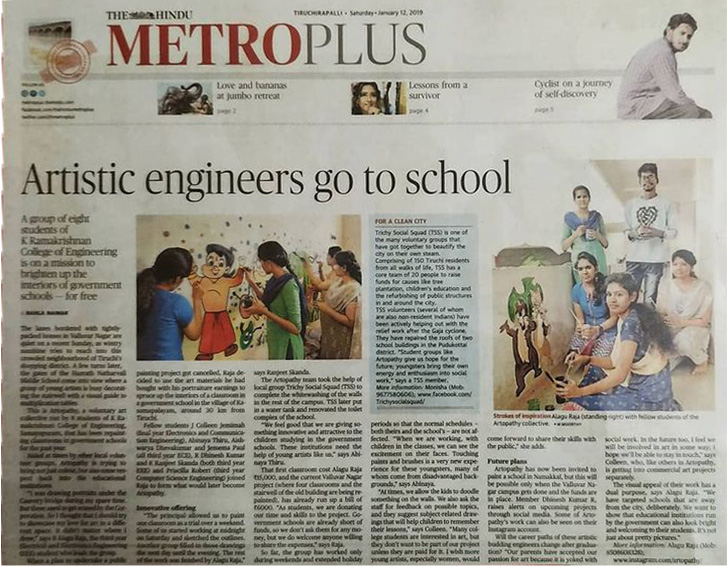

On June 5, 2020, I founded Code Grey Solutions, which offers IT solutions for site design and e-books.
As we grew, so did our network of college and high school colleagues.
Establishing new standards for accuracy, assurance, and elegance via individualised interactions that increase growth.
To retain our clients responsive, we assist the company's development and growth.
Our goal is to make things convenient and simple for people.
Initiatives
Initiatives
Code grey, Artopathy , science aid

On August 7, 2018, I set the foundation for ARTopathy and began restoring rural schools with the most damaged schools using the arts.
Later, my friends joined me in the project, and we occasionally received assistance from other neighbourhood volunteer organisations.
The administrator gave us permission to paint one classroom as a test over the course of a weekend. Artopathy is striving to bring more than simply colour.
On Saturday night around midnight, some of us got to work drawing the outlines.
The next day, into the evening, a different group filled in those sketches.
I completed the remaining work by myself. until we'd finished nine schools in 2 years.
After COVID, we once again began modernizing schools.

I visited my hometown, which is a long way from the city and where there no opportunities for people to trade their own agricultural products, during that time.
I created some of the techniques to boost their product value after watching such practises.
made tasks simpler using engineering principles I learnt to cut down on labour costs and increase family profits

2021 © Alagu raja